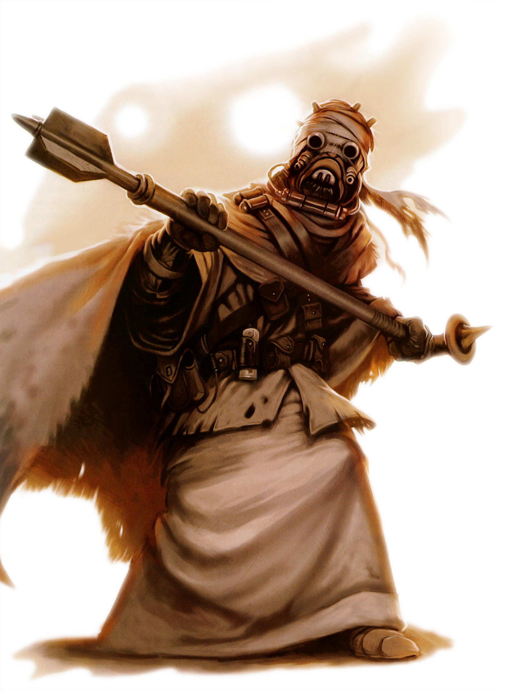

Tusken Raider
tusken raider
Special Abilities: Tusken Raiders begin the game with one rank in Survival. They still may not train Survival above rank 2 during character creation.
Bantha Riders: When making Athletics or Survival checks to handle a bantha, Tusken Raiders add automatic & to the check.
Water Reclamator: Tusken Raiders reduce the difficulty of all Resilience and Survival checks related to enduring extreme heat or going without water once.
Tusken Raiders, also referred to as Sand People, are tall, strong, aggressive, nomadic humanoid warriors who reside in the desert wastelands of Tatooine.
From head to toe, every Raider is always covered in strips of cloth-tattered robes that are belted together with dewback-hide leather. They see by using tube-like shields that protect their eyes, and breathe through simple filters that keep them from inhaling the sand particles that constantly swirl through the Tatooine air. Every piece of their attire serves to keep moisture trapped near their bodies, and hygiene is only attended to in complete privacy, for seeing another individual’s face, even accidentally, is cause for a blood duel. Only a Tusken’s mate is allowed to glimpse his or her face without the bandaging.
Tusken Raiders are ruthless fighters, hardened by their harsh environment to show no mercy to other species. They fear little, although they can be driven away by a substantial display of force. Traveling in bands of up to twenty or thirty, they nearly always ride their bantha mounts in a straight line, journeying one behind the other to hide their numbers from enemies. Their weapon of choice is the gaderffii, or gaffi stick, which is basically a double-edged ax made of cannibalized metal scavenged from abandoned or wrecked vehicles. Some carry blaster rifles, but Tusken blasters are not the most powerful or technologically advanced weapons.
This nomadic people was the dominant sentient species on Tatooine before settlers began to colonize the world during the days of the Old Republic. The Jawas, the only other sentients on the planet, while more intelligent, were not as large or fierce as their brutal neighbors, although there is some scientific evidence that suggests the two groups may both be descended from the same species, an ancient race known as the Kumumgah. The Tusken Raiders received their galaxy-recognized name from an attack they launched on a human settlement called Fort Tusken. While their attempt to force out the offworld settlers failed, this assault became renowned for its brutality. In response, the settlers set about to attempt the utter destruction of the Sand People, eliminating entire tribes at a time—leading to their near extinction before the few remaining tribes retreated to hide in the desert wastes.
As a result of these incidents, Sand People are inherently angered by the presence in their territories of offworld settlers, whom they feel encroach upon their ration of water and food. They will often attack moisture farmers and settlers without provocation—simply for the sake of intimidating those they perceive as enemies. Despite their bullying natures, Tusken Raiders will typically shy away from massive Jawa sandcrawler fortresses, heavily protected farmsteads, large cities, and even settlements, as well as from the vicious krayt dragons. It is evident that they favor situations where they have the upper hand, and will only take calculated risks.
Since they are a nomadic people, they maintain no permanent shelters and keep few possessions, viewing such belongings as liabilities. Regardless of their willingness to move regularly, they allow no other changes in their society or culture. Tusken Raiders fear machinery, the power of which has decimated their people in the past, and are thus thoroughly resistant to technology, stealing very little of it from hapless patrols, caravans, and moisture farmers. They feel that killing with more primitive weapons brings them the bravest of victories.
A vast yellow globe baking in the heat of its twin suns, Tatooine was mistaken for a star by early explorers of the Outer Rim—and in the scorching heat of high noon, locals joke that those explorers weren’t so wrong. Life on Tatooine is a study in perseverance, but despite the inhospitable conditions, there is life here. Jawas, hooded rodent-like scavengers, scour Tatooine’s wastes for scrap they can salvage. Primitive desert warriors called Tusken Raiders wander the desert, abiding by ancient tribal traditions. Herds of eopies root for buried lichen, rock warts hunt for prey, and an unlucky traveler may hear the booming cries of the semi-legendary krayt dragon. And there are more recent arrivals: humans, Hutts, and all manner of spacefaring species.
Despite what bored young moisture farmers might tell you, Tatooine is fairly well known in the galaxy. The system sits at a juncture ofhyperspace routes: The Triellus Trade Route connects Hutt Space with a sizable chunk ofthe Outer Rim, while a loop ofthe Corellian Run sees traffic running to and from the Core Worlds. Space battles were common over Tatooine long before the planet’s settlement, and today Tatooine’s spaceports continue to thrive.
To most outsiders, the language of Tusken Raiders is an unintelligible, angry combination of consonants and growls. They have no written language, so they rely on a long and complex oral tradition to keep track of their lineage and legends. Each tribe has a storyteller, whose duty is to preserve and retell the group’s history. The storyteller chronicles the coming-of-age tales for each member of the clan, and once he or she gives an account for the first time, not one word is permitted to change from that time forward. At some point, each storyteller will take on an apprentice and begin teaching the clan history, although the learner is not allowed to practice the history aloud, as the words must never be spoken incorrectly. If the apprentice makes a mistake, he or she is killed outright, as it is considered blasphemy. Once an apprentice has learned every tale of each lineage perfectly, he or she becomes the next storyteller, and the teacher will wander into the desert to die.
Because they live such a cruel, war-like existence, the process of coming of age is very important to Tusken Raiders. Children are cared for by adult Tuskens, but they are not considered people until they have endured the actual ceremonies that bring them into maturity. Babies often perish because of the difficult desert life, and Sand People take great pride in knowing that only the strongest survive. To earn the distinction of adulthood, each youth must perform a great feat of skill or prowess, the magnitude of which determines his or her station in the tribe. A solemn ritual is held to prepare Tusken youths for their journey into the wilderness, during which they are given totems, armaments, and some water to carry with them. Saying no words, and showing no fear, they mount their banthas and head off into the desert. If they return with trophies showing that they have been victorious, they are greeted with grand rejoicing. A bonfire is lit, food prepared, and amid great ceremony the storyteller adds the young Tusken’s tale of bravery to the tribal history. If they do not return, no word is mentioned of them again.
Sand People make no social distinction between males or females. Only clan leaders keep records on sexes, so that they can arrange marriages, and as soon as a youth becomes a recognized adult, he or she is assigned a mate. Through a ritual that mixes the blood of husband and wife with that of their bantha mounts, they are joined for life.